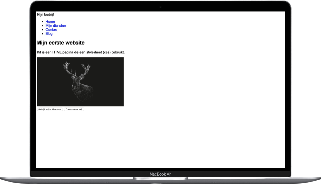

hier staat al het informatie over de verschillende programmeertalen talen die wij (de studenten) gaan gebruiken.
via de sidebar, die aan de rechter kant van uw scherm staat, kunt u gelijk naar een specifieke programmeertaal scrollen.
programmeren
HTML
hier gaan wij u uitleggen waar we html voor gebruiken, hoe het werkt en wat het allemaal voor gebruikt word.
CSS
hier gaan wij u uitleggen waar we css voor gebruiken, wat het doet en hoe het ongeveer werkt

Als u geen stylesheet (css) definieert in uw html-bestand, gebruikt de browser een standaardstijl, genaamd "user-agent stylesheet". HTML-bestanden met CSS
Wanneer u een stylesheet (css) in uw html-bestand definieert, neemt de browser de controle over de stijl van het css-bestand dat aan dat html-bestand is gekoppeld. macbook met website met css